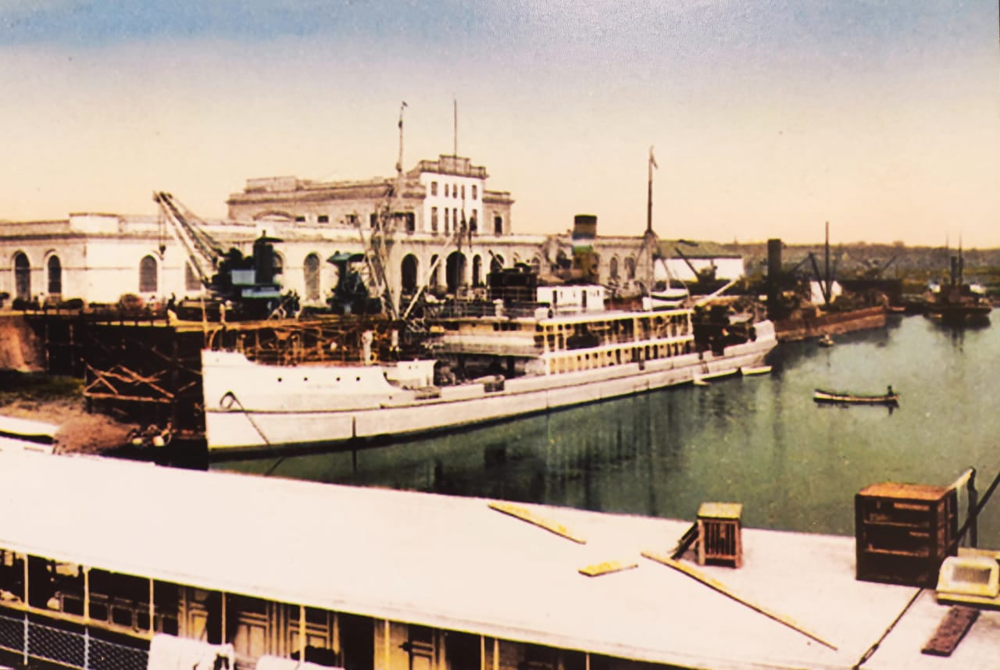

Historical references indicate that the bay of Asunción, from the time of the Spanish conquerors, was an important posting point for ships. The place where today located the city of Asunción, was inhabited by the "carios" family of the Guarani. Later, the Fort Nuestra Señora de la Asunción was founded by Juan de Salazar and Espinosa on August 15, 1537, which would give life to the city, with the creation of the Cabildo (1541)
During the government of President Don Carlos Antonio López, many European professionals were hired, including: Architects and Engineers, Artists, Industrial Technicians, etc. and in this way, the beginning and the change of the architectural and urban profile of the city of Asunción were observed. Many expressed the good quality of the construction works carried out, among which we can mention: The Palace of Francisco Solano López, among others.
The English Jorge Federico Masterman, in his book "Seven years of adventures in Paraguay" (American Press-Buenos Aires 1870) wrote the following opinion: "The Custom House is so hideously ugly, the sloping ground and colonnades with their twenty-two (22) arches and heavy cornice, it seems as if it wanted to plunge into the river"
At the end of the War against the Triple Alliance (Year 1870), Asunción began its building reconstruction process. At the end of the 19th century and the beginning of the 20th century, a considerable flow of foreign immigrants began to arrive, and the city underwent an important change in its urban landscape. There are no documentations that certify the construction data of the Port.
According to Lawyer Ángel D. Sosa, in his book "Puerto de Asunción" he refers: "In the year 1890, work began that included the construction of a solid wall, sheds, sheds and some good wooden docks known as winches and powered by human power" Previously there were sheds and a series of precarious docks, which allowed the ships to load and unload merchandise, or load and unload passengers".
In said reading material, he also describes: "The first building consisted of two aligned rectangular sheds, leaving a central space totally open, without construction, which fulfilled the role of great main access, both pedestrian and vehicular (carts, horses, etc.) from the streets that converged in it (Avenida Colón, Benjamín Constant, the Independent Paraguayan). Both warehouses had recesses, one towards the dock and the other towards the street. The ceilings were hidden behind Romanized facades, with semicircular arches."
During the presidency of Dr. Juan Gualberto González (1851-1912) who governed Paraguay in the years 1890-1894, the project of the new building of Puertos, to an Engineer with the surname Huergo (1892) The same, was not carried out because the costs were high. Later another engineer surnamed Hill, presented a project whose costs were considered lower, which could not be carried out (Memoirs of Dr. Audivert).
In the end, the government took over the work using parts of both projects presented. In 1904, it gains strength with the installation of the offices of the National Directorate of Customs and Ports. In the year 1907, "A beautiful building for Customs offices" is inaugurated with a neoclassical style on the front on the street and of reminiscences of the beginnings of the Industrial Revolution in the facade that is on the wharf; always keeping the arcades of half a point for the recesses.
In 1927, the concession of services to the Asunción Port Concesión Corporation, of US capital, began.
In 1961, the most significant intervention was carried out, the upper floor was built in both blocks, interconnected with the central space in the first floor, built earlier and mainly modified in the style of the building's facades, going from semicircular arch openings to "modern" style straight geometry openings. With the arrival of the first Paraguayans received from Architects abroad, (Argentina, Brazil, Italy, etc.) in the 1930s.
He was the architect and professor at the Faculty of Architecture of Asunción; Francisco Canese who imposed his architectural design on the main facade of the Customs building.
In the post years changes were added to the main facade: reinforced concrete slabs as visors, square-based pillars, forming a new recess, both in façade of the main access as well as the façade towards the Bay of Asunción.
(Source: Intervention Protocol and Executive Project for the Restoration of the Historic Building of the Port of Asunción- Architecture Laboratory: Architect Javier Corvalán- Architect María Inés Azorero).
On the commemorative plaque located in the main access hall of the building it reads: "Construction began on December 1, 1957 and was inaugurated on December 15. August 1961. Civil Engineer Juan C. Brítez Caballero and Christian & Nielsen de la Cía. Argentina de Construcciones S.A". The Engineer and Architect Carlos Hoffer, among other professionals in the construction area, also worked on this work.
Formal Description From the point of view of applied technology: In the 1940s, academicism continued to be used in construction works, with a own style and characteristic: Sensitivity towards the urban context that integrates harmoniously with the built environment and the natural environment. The building It presents a simple, geometric volumetry, with straight lines and cornices, typical of the Modern style that was used from the 40/50/60 years, which corresponds to the date of the last intervention and it is the image of the building to this day (year 2017).
The building is located on a large plot of land. Originally built (1890-1895) as two (2) separate single storey blocks, with openings leading they consisted of semicircular arches on the facades. In the year 1898, according to photographs, two (2) blocks appear with an upper floor, leaving the central space free. Later, the central space was covered and had a shot with straight lines. Here the orthogonal openings appear on the upper floor. Then, the auction added a decorative element, it becomes a building with a neoclassical façade.
In 1961 it became a building with a modern style facade, the arches were replaced by orthogonal openings.
Constructive aspect: The foundations that support the walls are probably made of raw stone placed, since in certain sectors there could be piles. The brick masonry walls vary in thickness: (0.45m, 0.30m, 0.15, or more) Both outside and inside the walls they are plastered and painted, and some pillars and exterior moldings are covered with pills.
The roof or cover of the upper levels is made up of corrugated galvanized sheets with wooden structures (trusses, braces, and straps) with slopes between 35% or more.
The openings in certain sectors are made of wood (doors) and metal on the outside. It is observed in the interior: divisions with screens, etc. The floors are made by granite tiles in certain sectors, and calcareous tiles in others.
Degree of Assessment (According to Municipal Ordinance JM 35/96) Degree Architectural Value; Comments The degree of valuation is consigned by the Historical Center Office of the Municipality of Asunción. It is part of the National Heritage by Law 5621/16, Resolution No. 481/2017 of the National Secretariat of Culture (SNC). The Municipality of Asunción has cataloged it through HJM Ordinances No. 28/96 and 35/96.
Observations There are projects for the Enhancement of the building, it is part of the reconversion project of the Historic Center of Asunción and will include the authorization inside the future National Museum of Art. The project promoted by the Ministry of Public Works and Communications (MOPC) seeks to recover this area for citizens.
Bibliography Gutierrez, Ramon. Urban and Architectural Evolution of Paraguay-1537-1911- Comuneros Editions-Asunción, Paraguay Sosa, Angel Domingo. Book: Port of Asunción (year 1980). Asuncion, Paraguay File presented by the owner, with the Intervention Protocol requested by the DGPC/SNC National Secretariat of Culture (SNC) - General Directorate of Cultural Heritage. - Heritage Registry Directorate-Cultural Heritage Registry Department. Municipality of Asuncion-General Directorate of Urban Development- Directorate of Planning U.-Department of Cultural Heritage
Linking with other tabs Link National Identification Card of the Immovable Cultural Asset- Heritage Registry Directorate - General Directorate of Cultural Heritage of the National Secretariat of Culture (SNC). Building Inventory Sheet- year 1990- Historical Center Office- Municipality of Asunción.
Work team Cataloger Arch. Mirtha Ibarra C. Collaborators Arch. Msc. Clarisse Insfrán Echauri. Other Collaborators Func. Gustavo Barrios Alvarez. Func. Humberto Battioni
Component entity Heritage Registry Directorate Data collection date 05/01/2018 Operator Mirtha Ibarra Registration date 09/08/2020